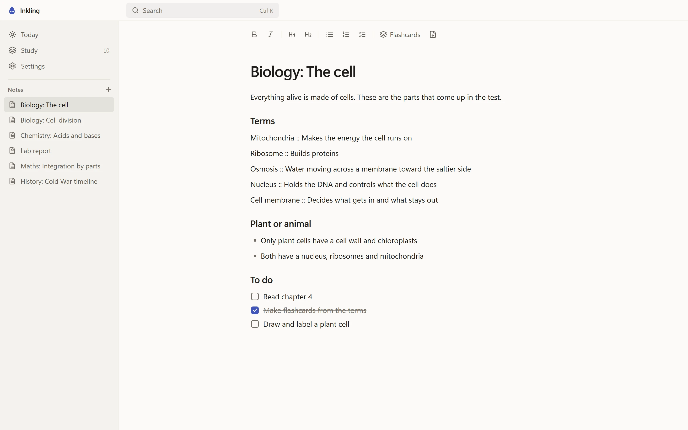
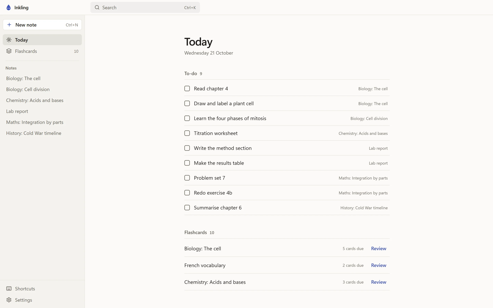
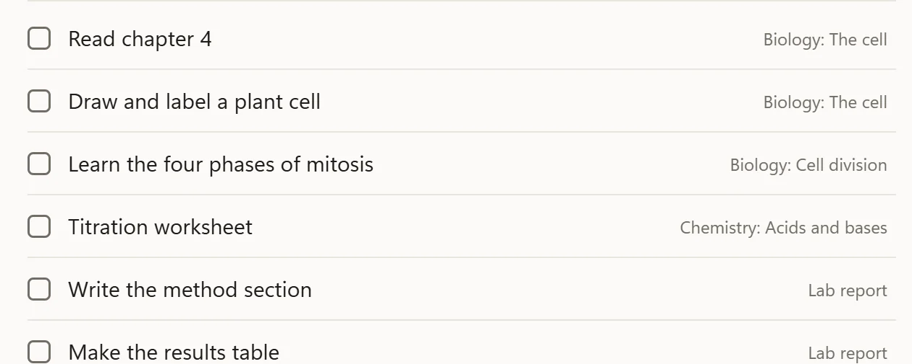
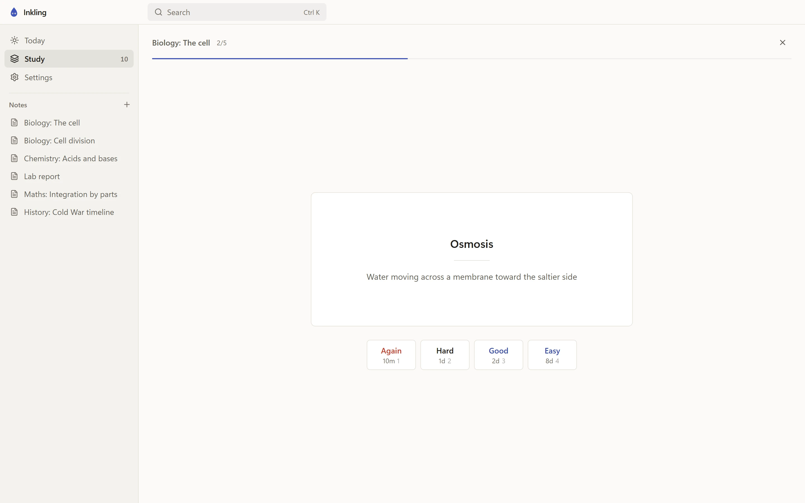
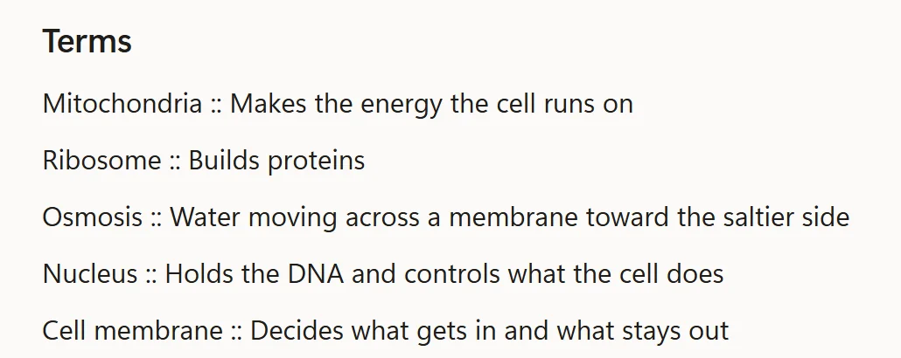
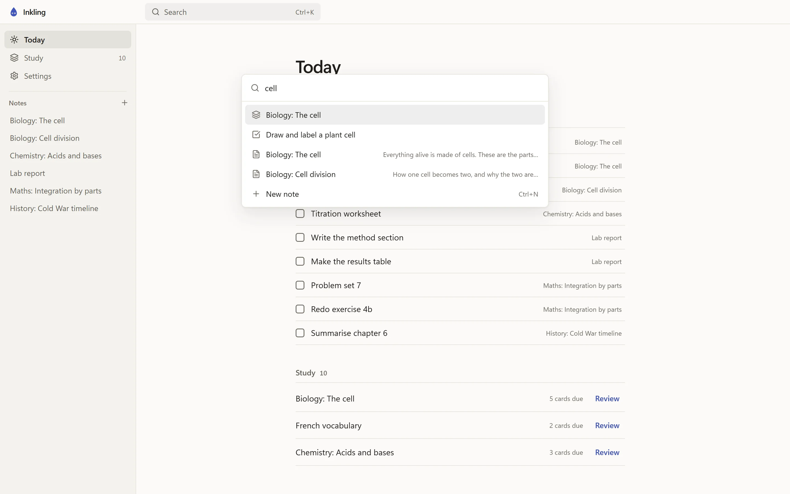
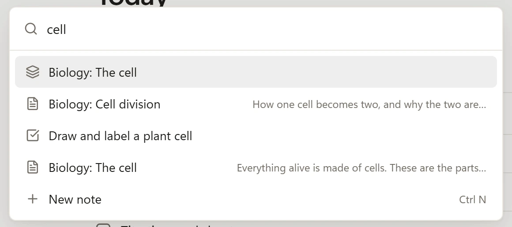
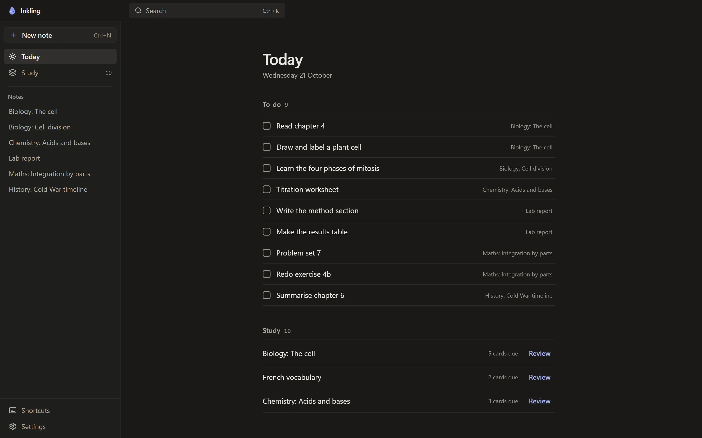

Today
Every to-do on one page
Every open checkbox, from every note, shows up on one page called Today. Tick it there and it is ticked in the note too.
The decks with cards due wait on the same page.
A calm place for your notes, to-dos and flashcards. It works offline and you never sign up for anything.
Paste this into Terminal and press Return. Inkling installs itself and opens.
curl -fsSL https://inkling.punds.ch/install | shYou can also download the disk image. The first time you open it, macOS asks you to allow it in System Settings, under Privacy & Security.
If Windows says it protected your PC, click More info, then Run anyway.
Inkling runs on Windows, macOS and Linux. Open this page on your computer to download it.

Today
Every open checkbox, from every note, shows up on one page called Today. Tick it there and it is ticked in the note too.
The decks with cards due wait on the same page.


Flashcards
Write Term :: Definition in any note and that line becomes a flashcard. Each card comes back right before you would forget it.
Rate a card with the keys 1 to 4 and keep going.


Search
Ctrl+K finds any note, to-do or deck, and Ctrl+N starts a new note. Your hands stay on the keyboard.


Themes
Pick one in Settings. The window opens in your theme from the very first frame.

AI assistant
Open Settings in Inkling and click Connect next to your assistant, then restart it. It can now search your notes, tidy them up, plan your day with you and quiz you on the flashcards that are due.
Another assistant? Click Copy setup in the same place and paste it into its MCP settings. Inkling fills in where it is installed.
Nothing is deleted for good: a deleted note waits in the trash for 30 days, the assistant can undo its edits, and your data is backed up before its first change. The assistant starts Inkling itself and nothing goes over the network.
Want your assistant to know Inkling inside out? Download the skill.
Copy setup gives you this, with your own path
{
"mcpServers": {
"inkling": {
"command": "C:\\Users\\<you>\\AppData\\Local\\Programs\\Inkling\\Inkling.exe",
"args": ["--mcp"]
}
}
}Inkling has no account and no analytics. It goes online for one thing: at start, it checks for a new version.
Your notes, to-dos and cards live in one file, inkling.db, in your user folder. Each start puts a backup next to it, and the last five are kept.
The export button above a note saves it as Markdown.
On Windows and Linux, Inkling downloads new versions by itself and installs them when you close it. On a Mac, run the Terminal command from the top of this page again.
On Windows, uninstall it under Settings, Apps, Installed apps. Your notes stay in %APPDATA%\Inkling until you delete that folder.
Yes. There is no account, no subscription and nothing to unlock.
Inkling is not signed with a paid certificate, so Windows warns about it the first time. Click More info, then Run anyway.
Inkling is free and not sold through a store, so Apple has not checked it. The Terminal command at the top of this page installs it without that question.
If you used the disk image, open Inkling once, then go to System Settings, Privacy & Security and click Open Anyway.
In one file, inkling.db: in %APPDATA%\Inkling on Windows, ~/Library/Application Support/Inkling on macOS and ~/.config/Inkling on Linux. The last five backups sit next to it.
Yes, all of it. Inkling only goes online at start, to look for a new version.
Any app that takes MCP servers. Settings connects the assistant apps it finds on your computer in one click; for any other, Copy setup gives you what to paste.
Yes. The export button above a note saves it as Markdown, and everything else is one SQLite file you can copy.
Each time you rate a card, Inkling works out when you are about to forget it and schedules it for then. Cards you know well come back less often.
Free for Windows, macOS and Linux.